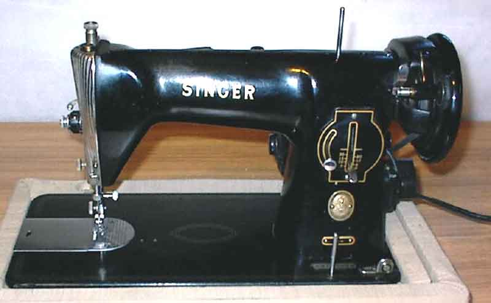

Singer Model 15-75
Picture courtesy of Barbara Lee Gates

© Alan Quinn 2005
Pictures posted on this page may not be reproduced or distributed in part or in whole without the prior written permission of the relevant copyright owner